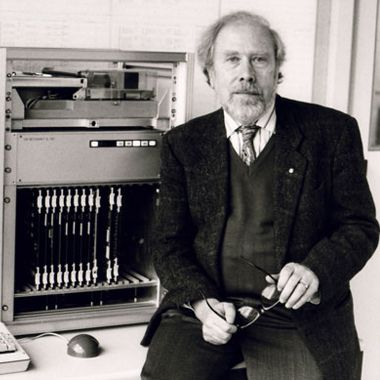

Pascal es un lenguaje de programación creado por el profesor suizo Niklaus Wirth entre 1968 y 1969, y publicado oficialmente en 1970. Su objetivo principal era facilitar el aprendizaje de la programación a sus alumnos, promoviendo el uso de la programación estructurada y la correcta estructuración de datos. Con el tiempo, su uso se extendió más allá del ámbito académico, convirtiéndose en una herramienta para desarrollar aplicaciones de distintos tipos. Se caracteriza por ser un lenguaje fuertemente tipado, lo que significa que todas las variables deben tener su tipo declarado previamente para poder ser utilizadas. Además, su código se organiza en funciones y procedimientos, lo que hace que los programas sean más legibles y fáciles de mantener, a diferencia del estilo monolítico utilizado en lenguajes más antiguos.
Antes de crear Pascal, Niklaus Wirth había desarrollado los lenguajes Euler y ALGOL W, y más tarde continuó con Modula-2 y Oberon, que mantienen el estilo de Pascal. Inicialmente, Pascal estaba pensado principalmente para enseñar programación estructurada a estudiantes, convirtiéndose en un lenguaje de introducción en cursos universitarios. Sin embargo, con el tiempo su uso se expandió a proyectos de investigación, desarrollo de juegos y sistemas embebidos. Nuevos compiladores de Pascal siguen siendo ampliamente utilizados hoy en día. Pascal también tuvo un papel destacado en la industria tecnológica. Fue el lenguaje primario de alto nivel para el desarrollo en el Apple Lisa y durante los primeros años del Macintosh. De hecho, algunas partes del sistema operativo original del Macintosh se tradujeron manualmente a ensamblador del Motorola 68000 a partir del código fuente en Pascal. En el campo de la tipografía digital, el sistema TeX, creado por Donald E. Knuth, fue escrito en WEB, un sistema de programación literaria basado en Pascal para DEC PDP-10. Con la llegada de Object Pascal (Embarcadero Delphi), se desarrollaron aplicaciones como Total Commander, Skype y Macromedia Captivate. Delphi sigue siendo utilizado para crear aplicaciones Windows y permite la compilación cruzada para Mac, iOS y Android. Finalmente, Free Pascal, junto con el IDE Lazarus, se ha consolidado como una opción multiplataforma popular en GNU/Linux, siguiendo la filosofía “escribe una vez y compila en cualquier parte”. CodeTyphon es una de las distribuciones de Lazarus que incluye más paquetes preinstalados y compiladores cruzados, facilitando aún más el desarrollo multiplataforma.
Otra diferencia importante de Pascal frente a otros lenguajes, como C, es que en Pascal el tipo de una variable se define al declararla. Esto significa que no se permite asignar valores de un tipo incompatible a una variable, lo que ayuda a prevenir errores comunes derivados del uso incorrecto de las variables. Además, esta característica elimina la necesidad de usar la notación húngara, que consiste en añadir prefijos a los nombres de las variables para indicar su tipo.
Las primeras versiones del compilador de Pascal, entre ellas la más difundida UCSD Pascal, traducían el lenguaje a código para una máquina virtual llamada máquina-P. La ventaja de este enfoque era que, para adaptar Pascal a una nueva arquitectura, solo era necesario reimplementar la máquina-P, lo que reducía el trabajo requerido para portar el compilador.
En los años 1980, Anders Hejlsberg desarrolló el compilador Blue Label Pascal para el Nascom-2. Más tarde, al trabajar para Borland, reescribió este compilador, dando origen a Turbo Pascal para el IBM PC, que se vendió a un precio accesible de 49 dólares, orientado a la distribución masiva. Este compilador tuvo un gran impacto en la comunidad, reemplazando al BASIC en muchos PC, ya que traducía directamente a código máquina del Intel 8088, generando programas mucho más rápidos que los de los esquemas interpretados.
Durante los años 1990, la tecnología permitió construir compiladores capaces de generar código para diferentes arquitecturas de hardware, lo que facilitó que los compiladores de Pascal pudieran traducir directamente al código nativo de la máquina donde se ejecutaban.
Con Turbo Pascal 5.5, Borland añadió soporte para programación orientada a objetos, y posteriormente desarrolló Delphi, basado en el estándar Object Pascal. Aunque las primeras versiones se llamaron también Object Pascal, Borland decidió cambiar el nombre a Delphi en sus versiones más recientes, consolidando una plataforma potente para el desarrollo de aplicaciones Windows y multiplataforma.
Existen varios compiladores de Pascal disponibles para el público en general. Uno de los más importantes es Delphi, un producto de desarrollo rápido de aplicaciones (RAD) que fue creado por Borland y actualmente es mantenido por Embarcadero. Delphi utiliza un lenguaje descendiente de Pascal para generar aplicaciones en Windows, y en sus versiones más recientes también puede crear ejecutables para MacOS X, Linux y .NET.
Otro compilador muy utilizado es Free Pascal, un sistema estable y potente escrito en el mismo lenguaje Pascal, distribuido bajo licencia GPL. Este compilador es compatible tanto con código de Turbo Pascal como de Delphi y permite trabajar en diversas plataformas y sistemas operativos. En paralelo, existe el compilador GNU Pascal (GPC), escrito en C y basado en el proyecto GCC (GNU Compiler Collection), también distribuido bajo licencia GPL.
Durante los años 80 y principios de los 90, Turbo Pascal fue el compilador más influyente en el ámbito de la PC, principalmente por su velocidad de compilación y extensiones avanzadas. Aunque ya no se desarrolla, sus versiones antiguas hasta la 7.0 aún pueden descargarse gratuitamente desde el sitio de Borland. Posteriormente, aparecieron otros compiladores como Oxygene, diseñado para plataformas .NET y Mono, que incorpora una sintaxis moderna influenciada por C#, Eiffel, Java y F#. También existe Modern Pascal, que funciona como compilador e intérprete multiplataforma orientado a ofrecer una alternativa a PHP y Node.js, utilizando dialectos de Pascal ISO o híbridos con operadores de JavaScript.
En cuanto a proyectos derivados, se encuentra Kylix, una versión de Delphi para Linux que incluía la librería CLX como equivalente a la VCL de Windows. Sin embargo, este proyecto fue descontinuado antes de que Borland vendiera sus productos de desarrollo a Embarcadero. También hay compiladores más especializados como MidletPascal, orientado a la plataforma J2ME; Turbo51, enfocado en microcontroladores de la familia 8051; PIC Micro Pascal y PicPas, ambos destinados a programar microcontroladores PIC, siendo el último de ellos multiplataforma, de código abierto y con su propio entorno de desarrollo integrado. Finalmente, destacan propuestas como Smart Mobile Studio, que convierte programas escritos en Object Pascal a JavaScript para dispositivos móviles, y TMT Pascal, otra de las implementaciones modernas que amplían el ecosistema del lenguaje.
Pascal, aunque ya no es tan usado como antes, sigue siendo importante porque fue clave en la enseñanza de la programación estructurada y aún se utiliza en algunos entornos académicos. Su influencia está presente en lenguajes modernos y cuenta con compiladores como Free Pascal y Delphi que lo mantienen vigente, incluso para crear aplicaciones multiplataforma o trabajar con microcontroladores. Además, su valor histórico radica en haber marcado la transición hacia lenguajes más estructurados, dejando un legado fundamental en la informática.